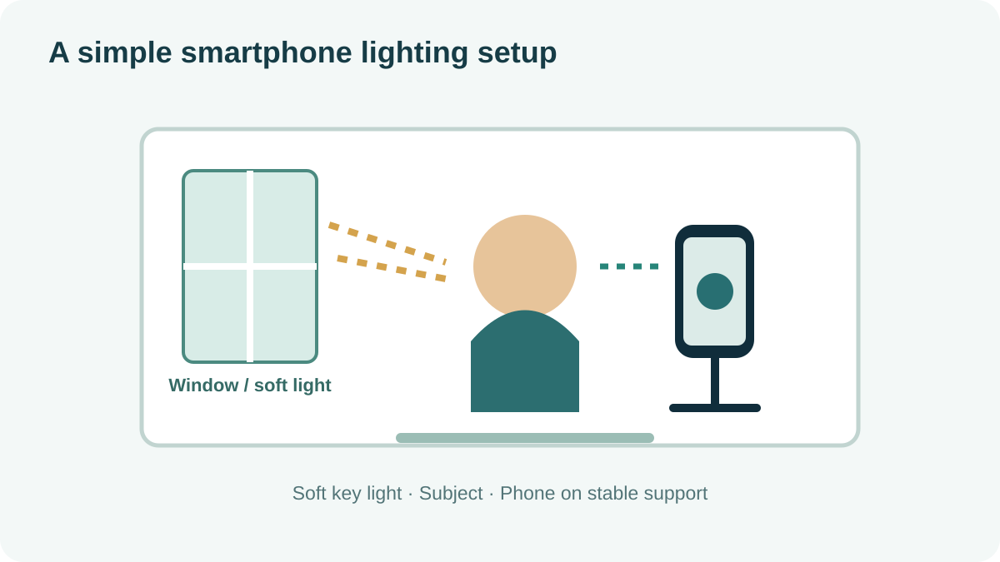

Before you press record, decide where the video will be published and how it will be viewed. A vertical 9:16 composition may suit Reels and Shorts, while a horizontal 16:9 frame is often better for a website, presentation or conventional YouTube video. If you need both, plan safe framing and capture separate versions when practical.
1. Set up your phone camera before recording
Choose resolution and frame rate for the project
1080p is often sufficient for social media and keeps file sizes manageable. 4K can preserve extra detail and allow reframing or cropping in a 1080p edit, but it uses more storage and processing power and may increase heat. Choose a setting your phone can record reliably for the length of the shoot.
- 24 or 25 fps: Useful for a more cinematic motion cadence when your editing and delivery workflow supports it.
- 30 fps: A practical default for many talking-head videos, tutorials and social clips.
- 50 or 60 fps: Choose when you need smoother motion or plan to slow footage down on a compatible timeline. It requires more light and storage.
Match your project settings to the delivery platform and local lighting. In regions using 50 Hz electrical lighting, some LED fixtures can flicker at certain shutter and frame-rate combinations. If you notice bands or pulsing, test another supported frame rate or anti-flicker setting on your device before recording the full session.
Lock focus and exposure where possible
Tap the face or product you want in focus. If your camera app offers AE/AF Lock, use it for a static shot so exposure and focus do not keep changing during the take. Avoid locking focus if the subject is moving toward or away from the phone unless you can track focus manually. Check highlights on faces, windows and reflective products; do not rely only on the brightness of the preview.
Keep white balance and lens choice consistent
If your phone offers manual white balance, set it to match the light and keep it consistent between shots in the same scene. In an automatic app, avoid changing between mixed lighting environments within one continuous take. Use the main rear camera as a reliable starting point, then test other lenses for the shot. Some ultra-wide and digital zoom modes can reduce detail or distort faces near the frame edges.
Clean the lens and prepare storage
Wipe the lens with a clean microfiber cloth. Check available storage, battery level, notifications, airplane or focus mode if appropriate, and the phone’s recording limits. Record a short test clip and play it back with sound before the actual shoot.
2. Shape the light instead of relying on room bulbs
Good lighting gives a small sensor a much easier job. Start with one soft, controlled source and make the background intentional.
- Use soft directional light: Place a subject near a large window with indirect daylight or use a diffused LED or softbox slightly to one side. A 30–45 degree position is a useful starting point, not a mandatory angle.
- Control harsh sunlight: Use a sheer curtain, diffuser or shade to soften direct sun. Avoid patchy light that changes as clouds move.
- Watch the background: Avoid a bright window directly behind a face unless you intend a silhouette. Move the subject or adjust exposure so the main subject remains clear.
- Keep colour consistent: Mixed daylight, warm bulbs and cool office lights can create uneven skin tones. Turn off conflicting sources or match their colour where possible.
- Add separation: Give the subject some distance from the background and use a gentle background light only if it improves the scene.

3. Stabilise the phone and make camera movement purposeful
- Tripod for static shots: Use a stable phone clamp and tripod for interviews, demonstrations, product details and lessons. Check that the clamp does not cover a microphone or lens.
- Gimbal for selected movement: A gimbal can help with walking shots and smooth tracking, but it is not required for every video. A tripod, monopod or careful handheld technique may be faster and more natural.
- Handheld technique: Hold the phone with both hands, keep elbows close to your body and move slowly. Take short steps and avoid sudden starts, stops and fast pans.
- Use built-in stabilisation thoughtfully: Electronic stabilisation may crop the frame or behave differently in low light. Test the mode you plan to use and avoid combining several stabilisation systems without checking for jitter.
- Keep the horizon level: Enable grid or level guides if available. Straight verticals and a level horizon make business and product footage feel more deliberate.
For a moving shot, rehearse the path once without recording. Move at a steady pace, keep the subject at a consistent distance and leave a moment before and after the action for editing.
4. Capture clear audio with a phone
Viewers may accept a simple image, but distant or echoing speech is difficult to listen to. The phone’s built-in microphone can work for a close presenter in a quiet space. For interviews, outdoor scenes or wider framing, place an external microphone closer to the speaker.
- Wired lavalier: Useful for a presenter who stays in one area. Check the connector and whether your phone needs an adapter.
- Wireless clip-on microphone: Convenient for movement and interviews. Check battery, pairing, receiver connection and signal before each take.
- Compact directional microphone: Can work for camera-facing dialogue or ambient sound when positioned and aimed correctly. It still needs to be reasonably close to the source.
- Monitor the recording: Use headphones or the receiver’s monitoring feature where available. Listen for wind, clothing rub, clipping, hum and background conversations.
- Record a backup when possible: For important interviews, use a second recorder or a separate audio track if your setup supports it. Clap once at the start if you need a simple sync reference.
Choose a quieter location, move away from fans and traffic when practical, and reduce room echo with soft furnishings. Do not assume noise reduction can fully repair poor source audio.
5. Plan commercial shots with intention
Think about how the footage will be edited. A planned sequence of wide, medium and detail shots gives the editor options and helps tell the story.
| Shot type | Useful for | Framing tip |
|---|---|---|
| Wide / establishing | Location, shop, workspace or overall product context | Keep lines level and show enough environment to orient the viewer. |
| Medium | Presenter, interview, demonstration or staff introduction | Frame around waist or chest up, with comfortable headroom and space to look into. |
| Close-up / detail | Product texture, packaging, hands at work or facial expression | Tap to focus on the key detail and check that it remains sharp. |
| Action / process | Service delivery, product use, preparation or behind the scenes | Show the action clearly; capture a wider safety angle and tighter details if possible. |
Record a few seconds of steady footage before and after the main action so the edit has room to breathe. The right amount depends on the shot; a short product insert may need less time than a presenter line. Capture each important action from more than one useful angle when the workflow allows.
Use the grid as a guide rather than a rule. Leave clean space for titles only when the design calls for it, avoid cutting off hands or product details unintentionally, and check that any on-screen text remains inside platform-safe areas.
6. Edit simply and export a clean master
- Organise footage: Sort clips by scene or sequence and keep a backup of original files before deleting anything from the phone.
- Build the story: Remove mistakes and unnecessary pauses, then use wide, medium and detail shots to cover edits and maintain interest.
- Balance audio: Keep dialogue intelligible and consistent. Music should support the scene without competing with speech; there is no single music level that fits every voice or mix.
- Correct colour first: Match exposure and white balance across clips before adding a creative look. Avoid pushing saturation or contrast until skin and product colours look unnatural.
- Use graphics carefully: Keep captions readable, check spelling and ensure important text is not hidden by platform controls.
- Export for the destination: Use the intended aspect ratio, resolution and frame rate. Choose a suitable bitrate or quality preset in your editor, then watch the exported file from beginning to end.
For a 9:16 short-form video, frame the subject centrally enough to survive cropping and leave room for captions and interface overlays. For a website or conventional horizontal video, prepare a separate 16:9 edit when needed instead of stretching a vertical clip.
7. Smartphone shoot-day checklist
- Clean the lens and check storage
- Charge phone and microphone batteries
- Choose the right aspect ratio
- Set resolution and frame rate intentionally
- Lock exposure and focus when appropriate
- Check white balance and flicker
- Shape soft light and tidy the background
- Secure the phone on a tripod or grip
- Connect and test the microphone
- Record and review a test clip
- Capture wide, medium and detail shots
- Back up original footage after the shoot
Frequently asked questions
Should I use the rear camera or front selfie camera?
The rear main camera is often the best starting point because it may offer a larger sensor, better lens options or higher recording modes on many phones. But capabilities differ by model. Use the front camera when it helps you frame yourself, and test focus, exposure, audio and resolution before an important shoot.
Do I need a paid professional camera app?
No. The built-in camera app is enough for many projects if it provides the controls you need and records reliably. A manual camera app can be useful when you need finer control of shutter, ISO, white balance, focus or log recording, but it cannot compensate for poor light or distant audio.
How can I prevent my phone from overheating?
Avoid direct hot sunlight, remove a thick case if the manufacturer recommends it, close unnecessary heavy apps, keep the phone ventilated and record in manageable takes. High-resolution and high-frame-rate modes can create more heat. Follow the device’s temperature warnings and stop recording if it becomes too hot.
Can a smartphone replace a professional camera for every commercial project?
Not always. A phone can be excellent for social clips, interviews, product details and many small-business videos. Low-light work, long-form productions, demanding lens choices, multi-camera shoots and certain client delivery requirements may call for dedicated cameras, lighting, sound equipment or a professional crew.
Ready to shoot cleaner videos with your phone?
Polished smartphone footage comes from repeatable habits: clean lenses, intentional camera settings, soft light, stable movement, close audio and restrained editing. Master the basics, test your setup and build a shot list before the next shoot.
Need video production or editing support in Amravati? Explore our Video & Photo Production, Video Editing and creative services, or contact Creator Support Amravati to plan a project.